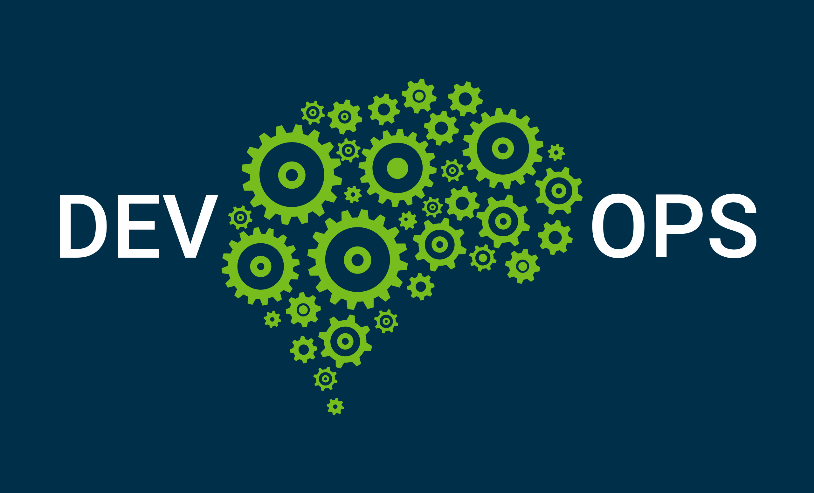

Le principe de DevOps
20/04/2020
Le modèle de DevOps est apparu autour de 2007 en Belgique avec Patrick Debois, Il est considéré comme un modèle plus récent dans le cycle de vie de développement logiciel car il se caractérise principalement par la promotion de l'automation et du suivi de toutes les étapes de la création d'un logiciel, depuis le développement, l'intégration, les tests, la livraison jusqu'au déploiement et l'exploitation.

Le principe de NFV
10/04/2020
Le Network Function Virtualisation « ou NFV » est définit par l’ETSI « European Telecommunications Standards Institute » destinée à virtualiser des fonctions réseau précédemment gérées par du matériel dédié. C’est une façon de concevoir, déployer et gérer les services réseau, le NFV dissocie les fonctions réseau des systèmes matériels pour les exécuter au niveau du logiciel.

Le principe de SDN
03/04/2020
Le Software Defined Networking « ou SDN » est une approche du réseau défini par l’ONF « Open Networking Fundation » dans laquelle le contrôle est séparé du matériel et transféré vers une application logicielle appelé contrôleur. Il isole l’infrastructure underlay du réseau afin de pouvoir la traiter comme une entité logique ou virtuelle. L’objectif du SDN est d’abaisser les coûts.